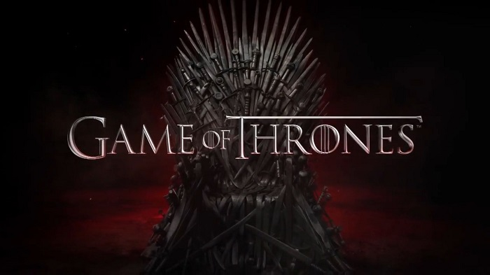

Game of Thrones

"Game of Thrones", George R.R. Martin'in "Buz ve Ateşin Şarkısı" serisinden uyarlanan, entrika ve güç mücadeleleriyle dolu bir epik fantezi dizisidir. Dizi, Westeros ve Essos adlı kurgusal kıtalarda geçer ve Demir Taht üzerinde hakimiyet kurmak isteyen soylu ailelerin karmaşık ilişkilerini ve çatışmalarını anlatır. Hikaye, Stark, Lannister ve Targaryen gibi hanelerin taht için verdikleri mücadeleleri işlerken, aynı zamanda duvarın ötesindeki mistik tehditler ve yaklaşan uzun kışın getirdiği tehlikeleri de gözler önüne serer. Siyasi entrikalar, ihanetler, savaşlar ve doğaüstü unsurların iç içe geçtiği bu destansı anlatı, izleyiciyi sürükleyici ve tahmin edilemez bir yolculuğa çıkarır.